Na serveru SkyLifeRP na vás čeká široká škála aktivit které si zde můžete pročíst.
Na našem serveru SkyLifeRP můžeš pracovat jako policista, hasič, doktor nebo úředník a ovlivňovat chod města. Vládní frakce ti nabídnou akci, zodpovědnost i respekt. Ve volném čase si můžeš odpočinout u rybaření, lovu zvěře nebo jiných aktivit v přírodě.
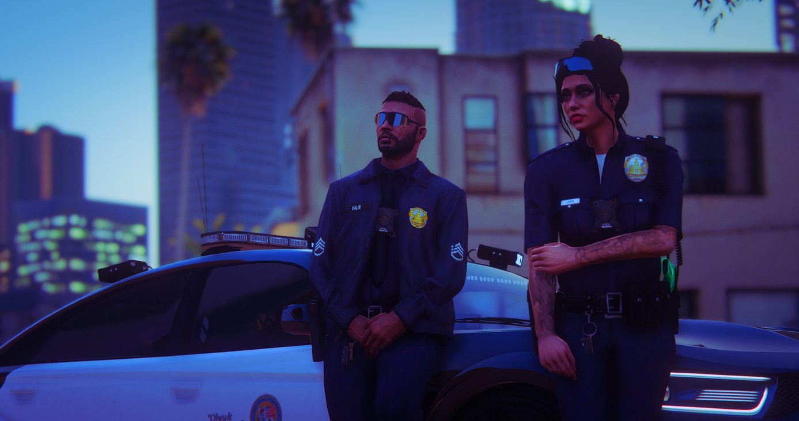
Výdělek: $3,000 – $5,000/hodinu
Udržujte pořádek ve městě, zatýkejte zločince a vyšetřujte trestné činy. Policisté jsou páteří bezpečnosti v Los Santos.
Více informacíPolicie na SkyLife není jen o zatýkání – je to páteř zákona, klíčová součást města, kde každé rozhodnutí může změnit průběh dne. Jako policista neseš odpovědnost, ale i sílu chránit.
Pamatuj: Nosíš odznak, ne pro prestiž – ale proto, že jsi ochoten dělat to, co jiní nedokážou. Právo, pořádek a důstojné RP začíná u tebe.
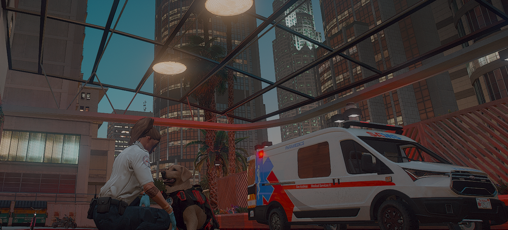
Výdělek: $2,500 – $4,500/hodinu
Zachraňujte životy, poskytujte první pomoc a transportujte zraněné do nemocnice. Záchranáři jsou nepostradatelní pro přežití města.
Více informacíV roli záchranáře na SkyLife nejde jen o první pomoc. Jde o životy, o rychlost, o rozhodnutí, která děláš ve vteřinách. Být záchranářem znamená být první na místě… a poslední nadějí.
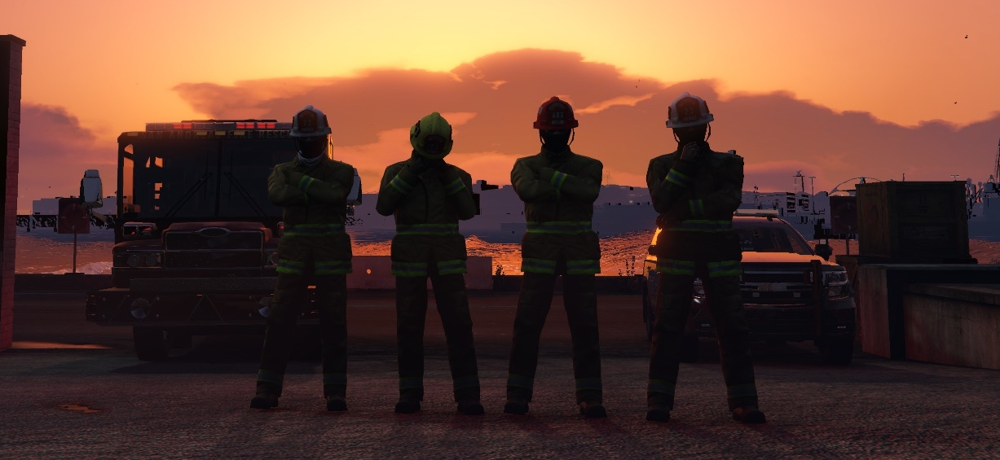
Výdělek: $5,000 – $8,500/hodinu
Bojujte s požáry, zachraňujte oběti z nebezpečných situací a pomáhejte při haváriích. Hasiči chrání město před živly a jsou hrdiny v první linii.
Více informacíNa SkyLifeRP se můžeš stát součástí elitního týmu záchranářů v roli profesionálního hasiče. Tahle práce není jen o hašení požárů – je o odvaze, rychlém rozhodování a záchraně životů uprostřed chaosu.
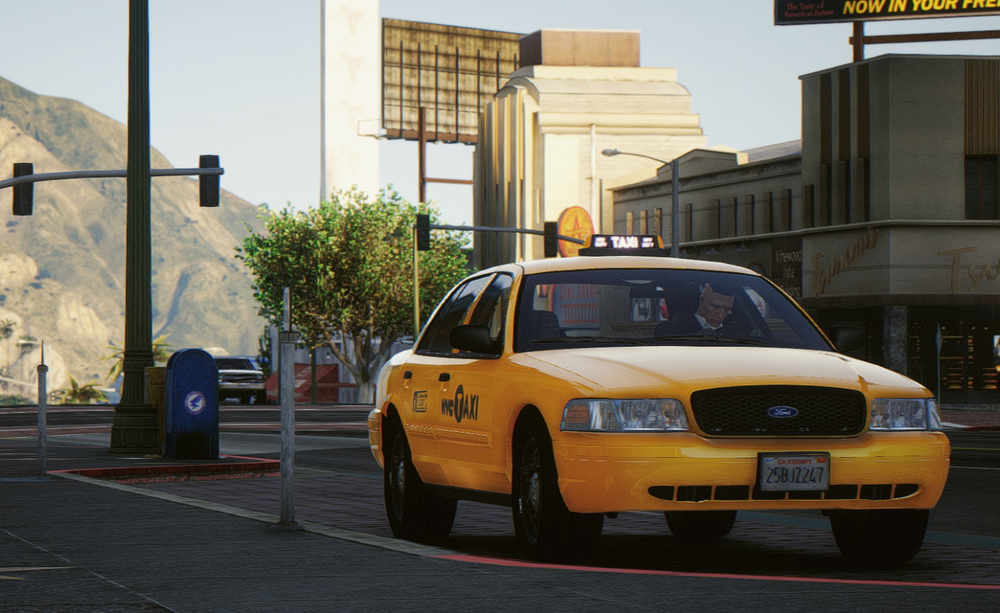
Výdělek: $3,500 – $4,000/hodinu
Nejvyužívanější brigáda na SkyLife!
Dopravujte obyvatele města, vydělávejte na jízdném a poznejte každou uličku Los Santos.
Taxi služba na SkyLife není jen o převážení pasažérů – je to spojka mezi lidmi, tepna města, která nikdy nespí. Jako taxikář znáš každou ulici, jsi průvodce i pomocník, když ostatní potřebují rychle dorazit na místo.
Proč právě taxi?
Protože jde o nejpopulárnější brigádu na serveru – denně ji využívají stovky hráčů,
takže o zákazníky nebude nouze!
Pamatuj: Nejsi jen řidič – jsi součástí života Los Santos. Každá tvoje jízda může znamenat začátek příběhu, na který se nezapomíná.
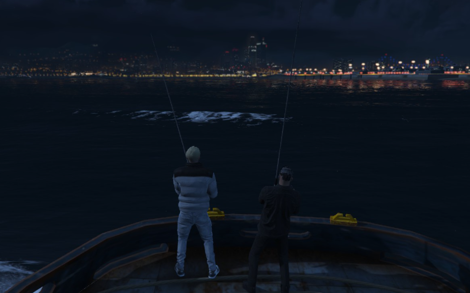
Výdělek: $800 – $1.600/hodinu
Chytejte různé druhy ryb, prodávejte úlovky a objevujte klidné kouty přírody. Rybaření je ideální volbou pro relax a výdělek mimo ruch města.
Více informací🐟 Rybaření je skvělý způsob, jak si vydělat peníze a zároveň se pobavit! 💰✨ Můžeš chytat sám nebo s kamarádem, takže o zábavu nebude nouze! 🛶👥
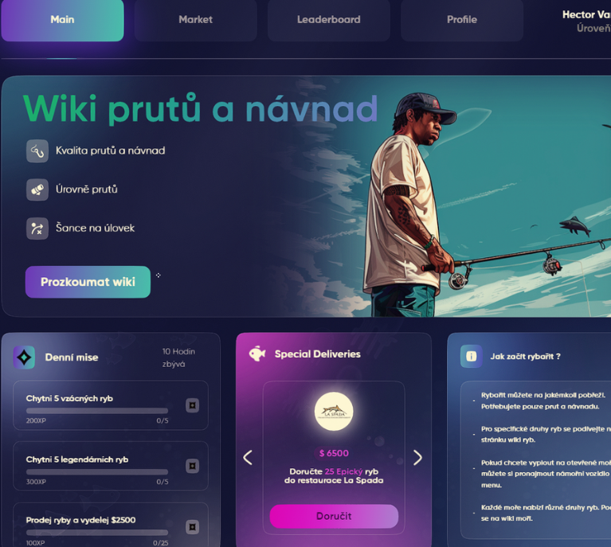
🚤 Nemáš loď? Žádný problém! Můžeš si ji půjčit v místní půjčovně a vyrazit na lov větších úlovků! 🐠🎣
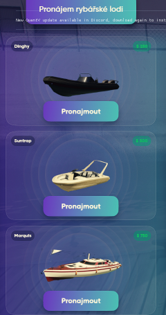
📈 S rybařením získáváš XP, což ti odemkne lepší pruty a návnady! 🏹🐛 Ty ti pomůžou chytat vzácnější a dražší ryby, takže si můžeš pořádně namastit kapsu! 💰🐡
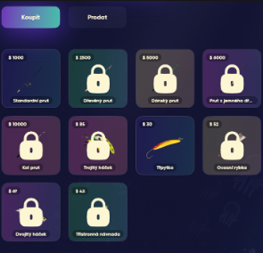
🎯 Denní mise – Každý den můžeš plnit speciální úkoly, které ti dají XP navíc a pomůžou ti rychleji postupovat! 📜🔥
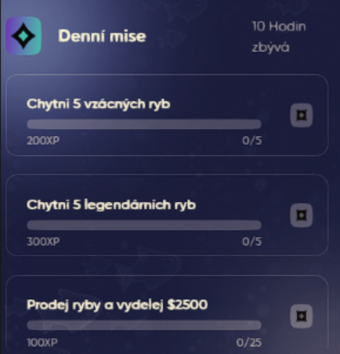
💎 Speciální nabídky – Občas se objeví exkluzivní nabídky, díky kterým si můžeš přilepšit a získat lepší vybavení! 🛍️🎁
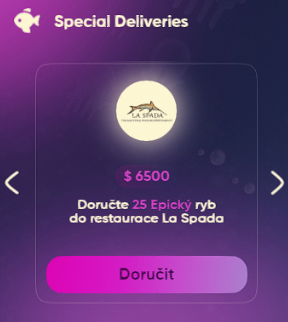
Na našem serveru SkyLifeRP najdeš bohaté možnosti roleplaye i mimo kriminální a státní scénu. Neutrální frakce zahrnují podniky, kluby a služby, které tvoří živé a realistické město. Ať už tě baví podnikání, komunikace nebo práce rukama – tady si vybereš.
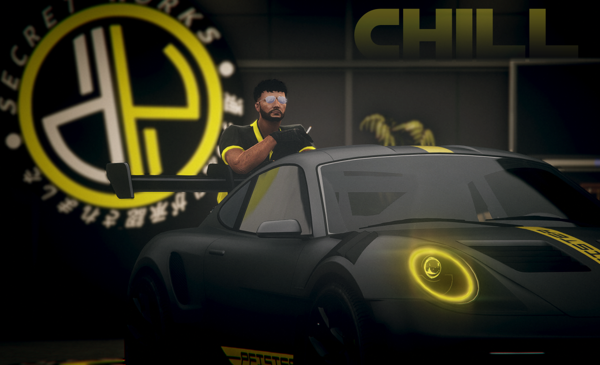
Výdělek: $2,000 – $3,500/hodinu
Miluješ auta? Opravuj vozidla, montuj tuning, lakuj karoserie a provozuj jednu z klíčových služeb města. Dílny jsou ideální pro hráče, kteří chtějí propojit RP s mechanikou vozidel.
Více informacíNa SkyLife najdeš hned několik funkčních dílen, kde si můžeš opravit, upravit nebo vylepšit své vozidlo. Každá z nich má vlastní styl a prostředí – vyber si tu, která ti sedí nejvíc!
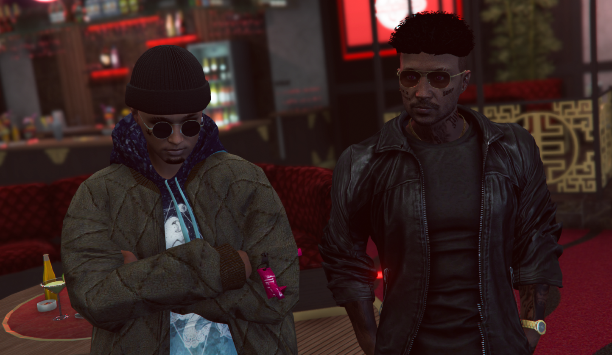
Výdělek: $2,400 – $3,000/hodinu
Otevři si vlastní podnik, připravuj menu, obsluhuj zákazníky a vytvoř si stálou klientelu. Možností je mnoho – od fastfoodu až po luxusní restauraci.
Více informacíNa SkyLife používáme propracované a interaktivní restaurační scripty od DRC. Tyto podniky přinášejí nejen plnohodnotné doplnění hladu a žízně, ale také jedinečný RP zážitek, kterým se obchody nevyrovnají.
Pamatuj: Jídlo z restaurace ti nejen naplní břicho, ale může být i součástí skvělého RP momentu s komunitou.
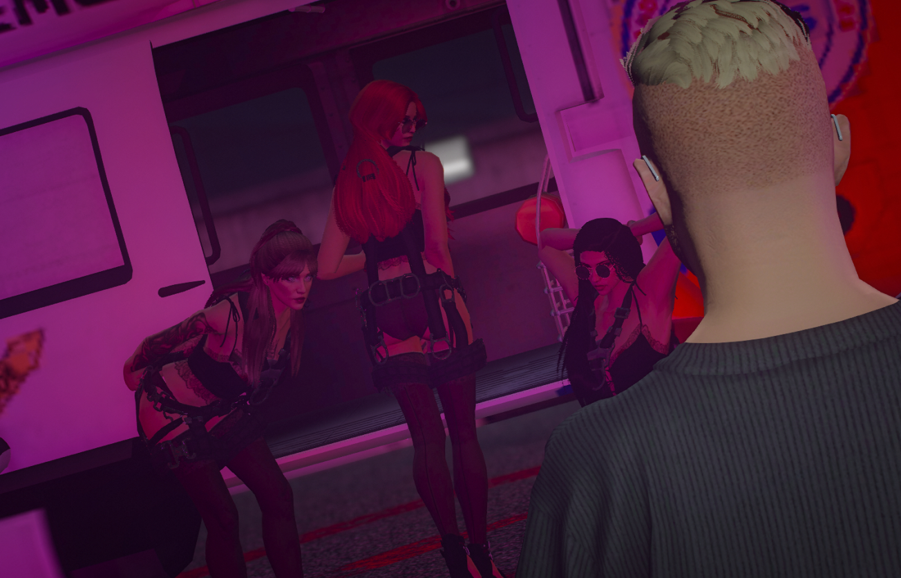
Výdělek: $2,800 – $3,500/hodinu
Staň se majitelem populárního nočního klubu, DJem nebo barmanem. Pořádej akce, přilákej návštěvníky a starej se o provoz podniku.
Více informacíSkyLife v noci nikdy nespí – a právě ty můžeš být tím, kdo udává rytmus večera, míchá nejlepší drinky nebo drží pořádek na vstupu. Kluby a bary jsou srdcem nočního RP – místo zábavy, konfliktů i nezapomenutelných momentů.
Náš server dává prostor kreativním hráčům, kteří chtějí budovat, tvořit a rozvíjet herní svět. Nezáleží na tom, zda máš chuť být úspěšný podnikatel, vášnivý kuchař, šikovný mechanik nebo mistr výroby – tady najdeš místo právě pro sebe.
Na SkyLifeRP můžeš vstoupit do podsvětí jako člen gangu, mafie nebo kartelu a budovat respekt nelegální cestou. Zapoj se do výpalného, pašování nebo si vybuduj vlastní síť – třeba pěstuj marihuanu, vař perník nebo obchoduj se zbraněmi. Tahle cesta je riskantní, ale výnosná – a otevřená jen těm, kteří si umí krýt záda.
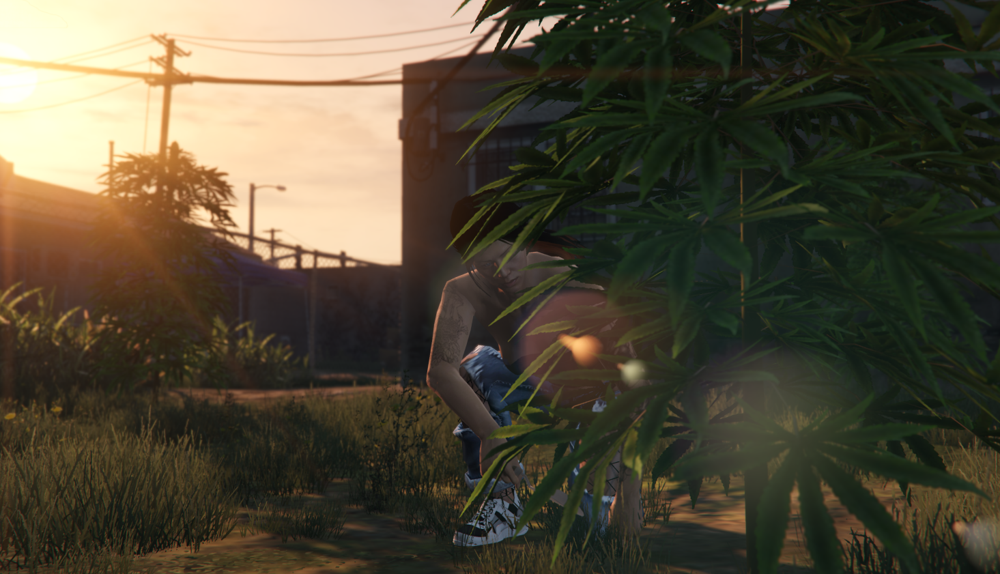
Výdělek: $1,000 – $3,000/hodinu
Sázejte, sklízejte a zpracovávejte rostliny na výnosný produkt. Pěstování marihuany vyžaduje opatrnost, ale může přinést vysoký zisk pro odvážné.
Více informací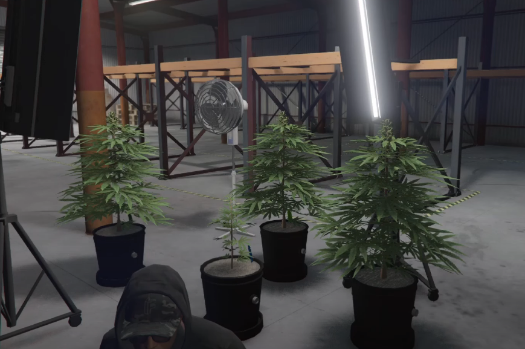
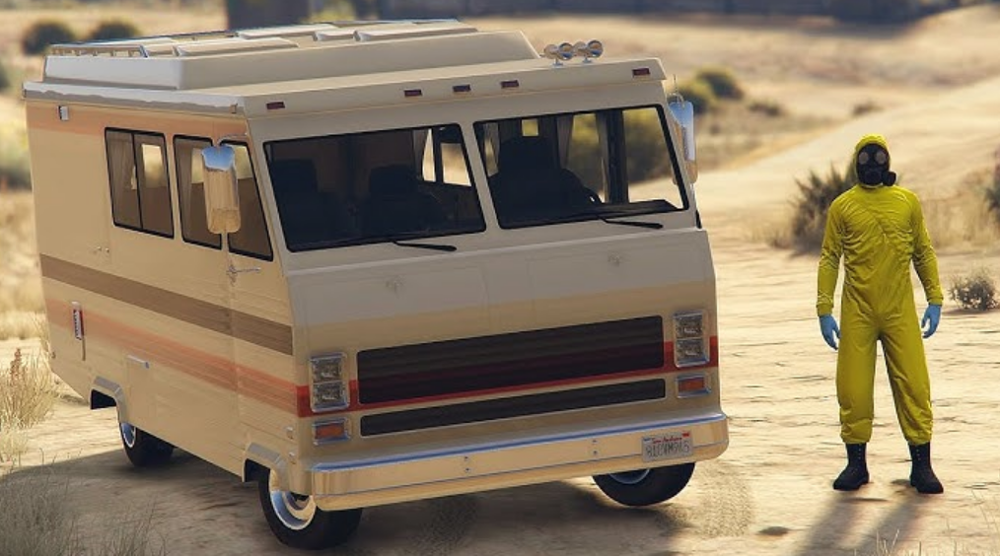
Výdělek: $1,000 – $3,000/hodinu
Obchody zde fungují klasickým způsobem, jak už dobře znáte.
Více informacíVýroba methu probíhá v karavanu Journey II, který si musíš koupit
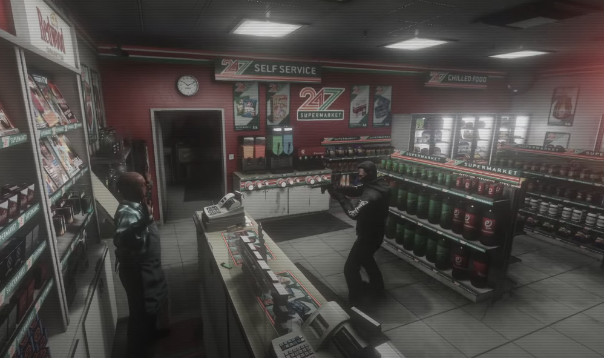
Výdělek: $1,000 – $3,000/hodinu
Obchody zde fungují klasickým způsobem, jak už dobře znáte.
Více informací⚠️ Než se do něčeho pustíte, přečtěte si pravidla!
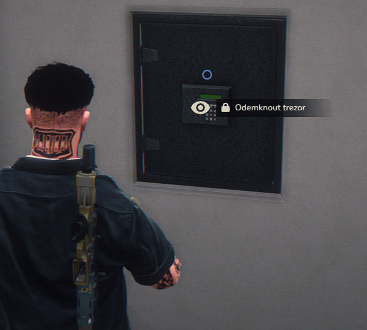
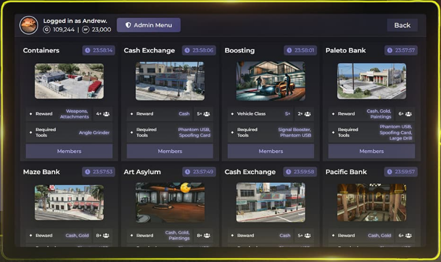
Výdělek: $1,000 – $3,000/hodinu
Heisty probíhají prostřednictvím Contract tabletu, který umožňuje plánování a provedení různých loupeží.
Více informací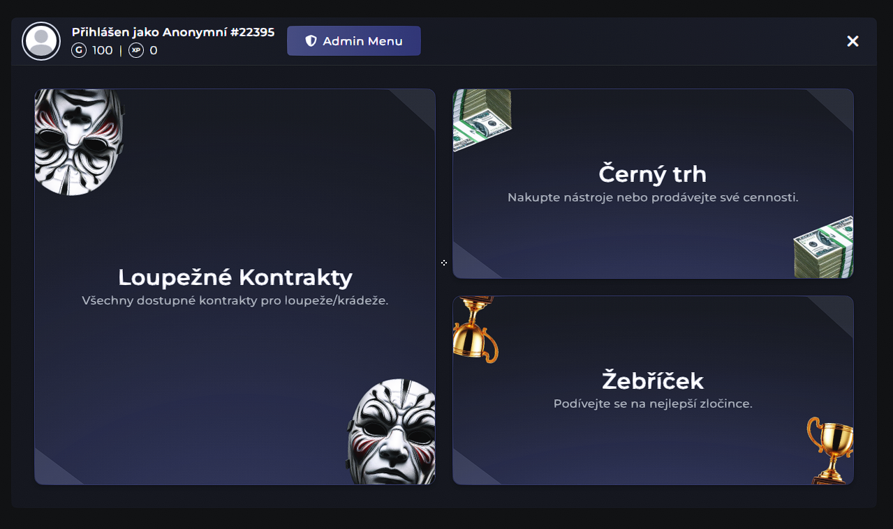
Art Asylum 🔹 Bobcat Security 🔹 Car Boosting 🔹 Cargo Containers 🔹 Casino 🔹 Cash Exchange 🔹 Fleeca Bank 🔹 Laundromat 🔹 Maze Bank 🔹 Pacific Bank 🔹 Paleto Bank
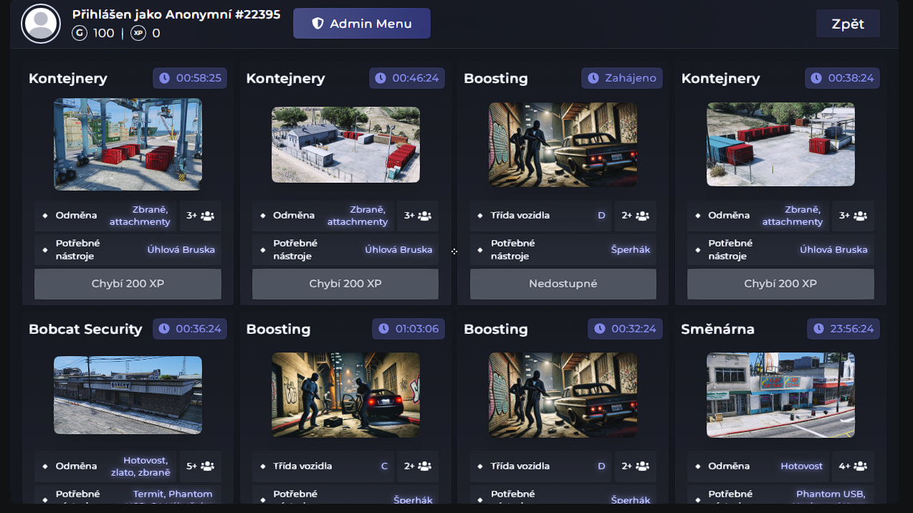